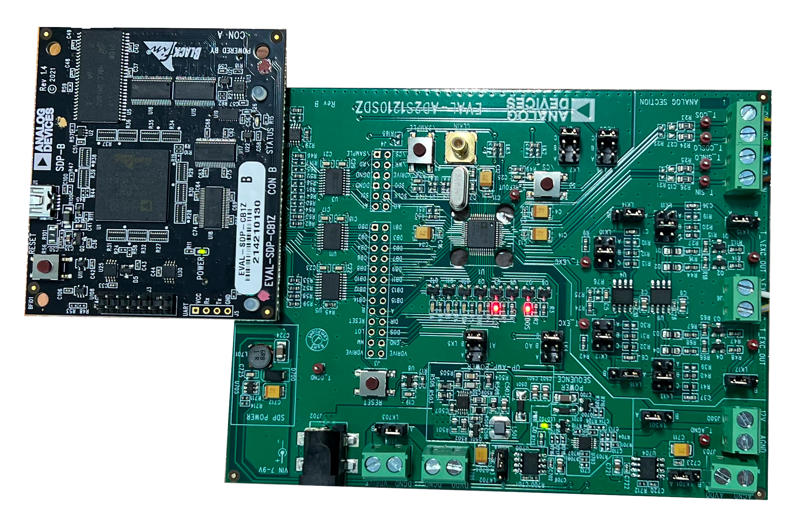

Image of Board Being Used for Resolver
A resolver is an analog device used to identify the angle of rotation of a motor or other device with a rotating shaft. It uses two fixed inductor coils positioned 90 degrees out of phase from each other and another rotating coil as the signal inducer. The rotating coil is excited with a sine signal such as 10kHz and depending on the position of the motor it is induced into the two fixed coils. The two outputs (sin and cos) increase and decrease alternately as the motor turns. This occurs because as the excited rotating coil lines up with a particular output coil, more signal is induced in that output. As the rotating coil continues to rotate, it will become less aligned with the output coil until it is 90 degrees out of phase at which time the output at that coil will go to 0. Using the magnitude of these two outputs an exact position of the motor can be determined mathematically which is used to then send current through the appropriate motor coils.